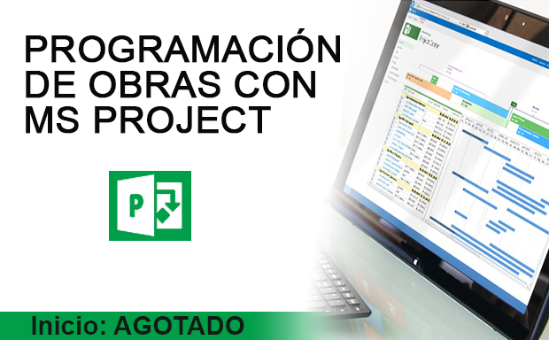

S/. 190 INSCRIPCIÓN

Descripción
En cualquier proyecto es imprescindible saber en todo momento el estado del desarrollo del proyecto para ello se debe hacer uso de la gestión de proyectos a fin de hacer el procedimiento mas eficiente para culminar con éxito el proyecto.